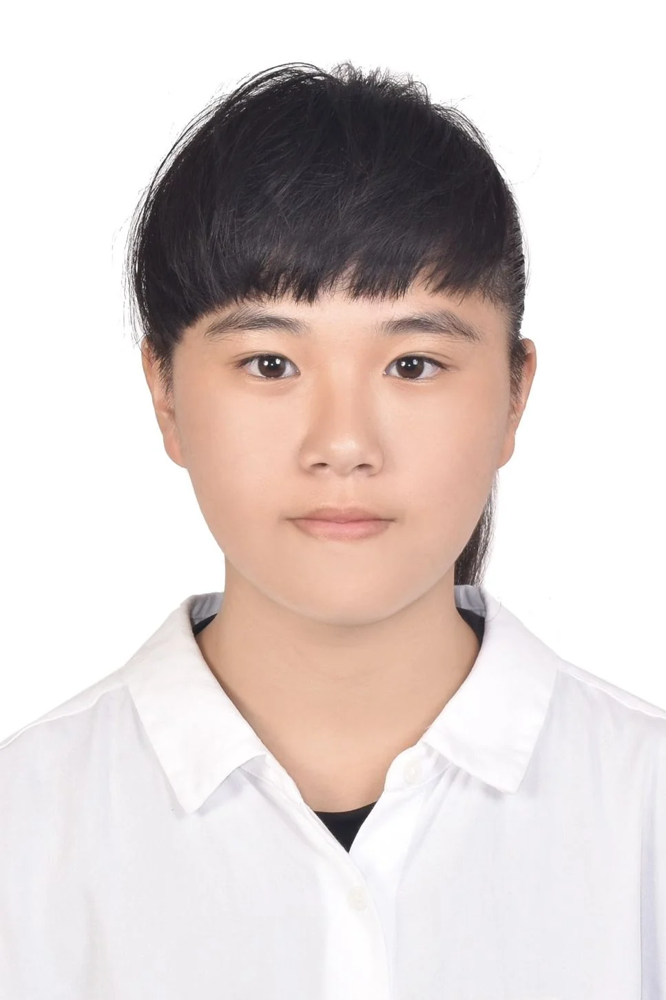

Lo Yu Hsin
LOCKaohsiung, Taiwan
MAILloyuhsin000@gmail.com
BIOGRAPHY & PHILOSOPHY
"Through sustainable buildings to find the development of symbiosis and co-prosperity between people and the environment."
I am currently studying architecture at the National Taiwan University of Science and Technology and graduated from the Department of Architecture at Chaoyang University of Technology. My design work includes renewable energy facilities, adaptive reuse, a park parking-area redevelopment proposal, and a corporate headquarters. I also explore spatial representation through models, photography, and drawing.
EDUCATION
2025 – NOW · National Taiwan University of Science and Technology (NTUST) — M.Arch
2021 – 2025 · Chaoyang University of Technology (CYUT) — B.Arch
2018 – 2021 · National Feng-Shan Senior Commercial & Industrial School
SOFTWARE SKILLS
INTERNSHIPS
Hanyu Construction Co., Ltd. / Architectural Intern (Jul–Sep 2024)
3D modeling for pavilion renovation, construction documentation, and office design proposal.
Liu Ke-Cheng Architects & Associates / Architectural Intern (Jul–Aug 2023)
Physical model fabrication, restroom drafting, and residential gate design.
HONORS & AWARDS
• 2021–2024 Academic Achievement — Ranked 10th in Department
• 2024 Junior Architectural Design Studio — 6th Place
• 2023 Sophomore Architectural Design Studio — 3rd Place
• 2022 Freshman Universal Community Design — Honorable Mention
• 2021 National High School Athletic Games (Tennis) — 6th Place
• 2020 National MICE Event Planning Competition — Creativity Award
SPECIAL EXPERIENCE & ATHLETICS
• NTUST Varsity Tennis Team — Division I Player (2025–NOW)
• Academic Exchange on Timber Construction at a University in Nara Prefecture, Japan (Jan 2026)
• CYUT Varsity Tennis Team — Vice Captain (2022–2025)
• CYUT Varsity Badminton Team — Public Relations (2022–2024)
• International Study Tour in New Zealand (Jul–Aug 2018)